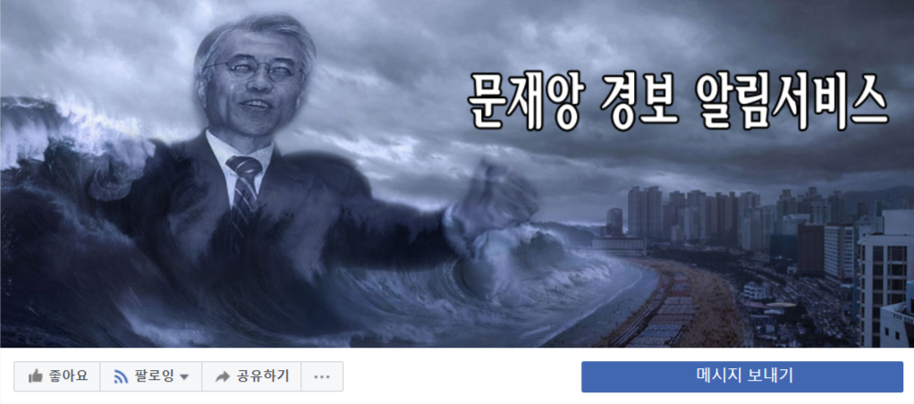

- 김대중
- 노무현
- 문재앙
문재앙의 뜻은?
‘문재앙’은 자유로운 의사 표현으로 풍자나 비평에 해당된다. 풍자 행위는 사실이 아니라 하더라도 사회통념상 허용되는 범위 내에 있다는 것이 법원의 판례였다.
대표적 판례는 1998년 김인호 전 청와대경제수석이 김상택 전 경향신문 화백과 경향신문을 상대로 명예훼손 혐의로 10억 원을 청구한 소송이다.
이 소송은 만평에 대한 명예훼손과 관련된 첫 판례로 주목을 받았는데, 당시 법원은 “구체적인 사실의 적시 없이 단지 특정 인물이나 사건에 관하여 비평하거나 견해를
표명한 것에 불과할 때에는 명예훼손이 되지 않는다”고 판결했다.

출처 : 뉴스톱(https://www.newstof.com)
<